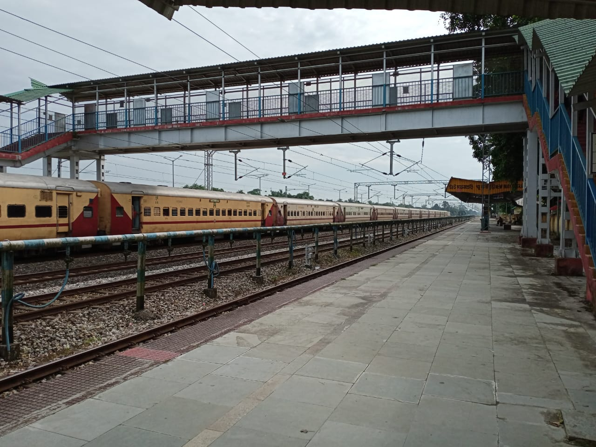
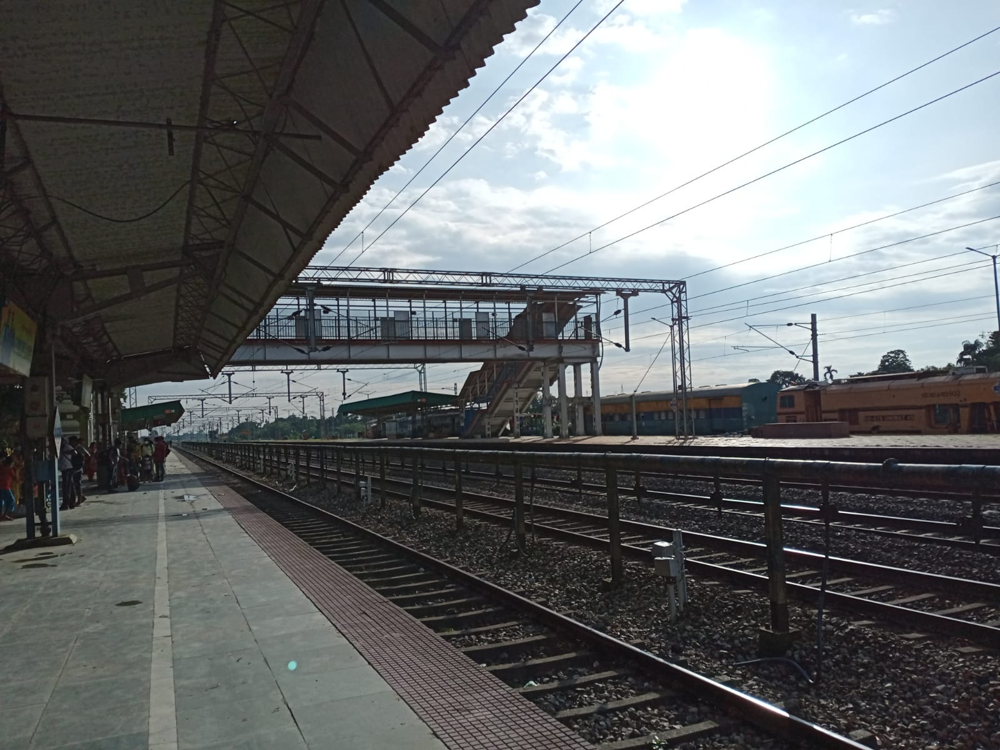
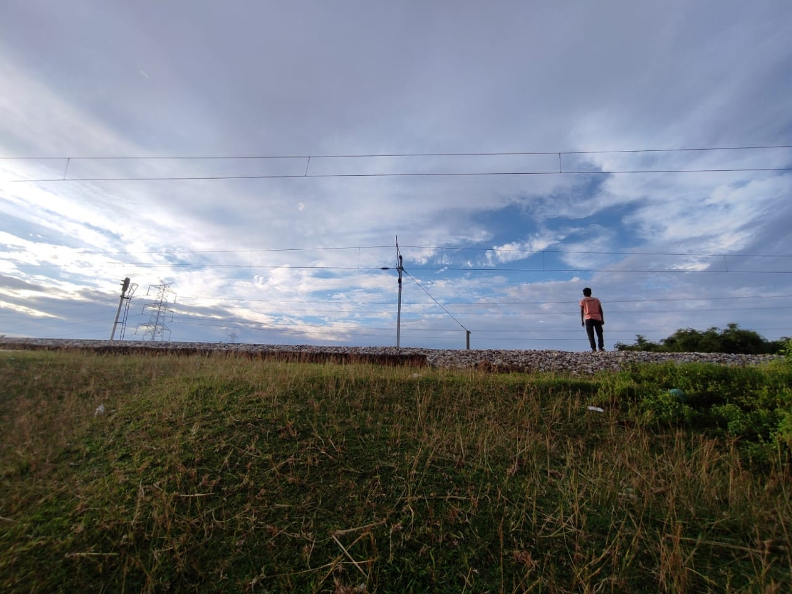
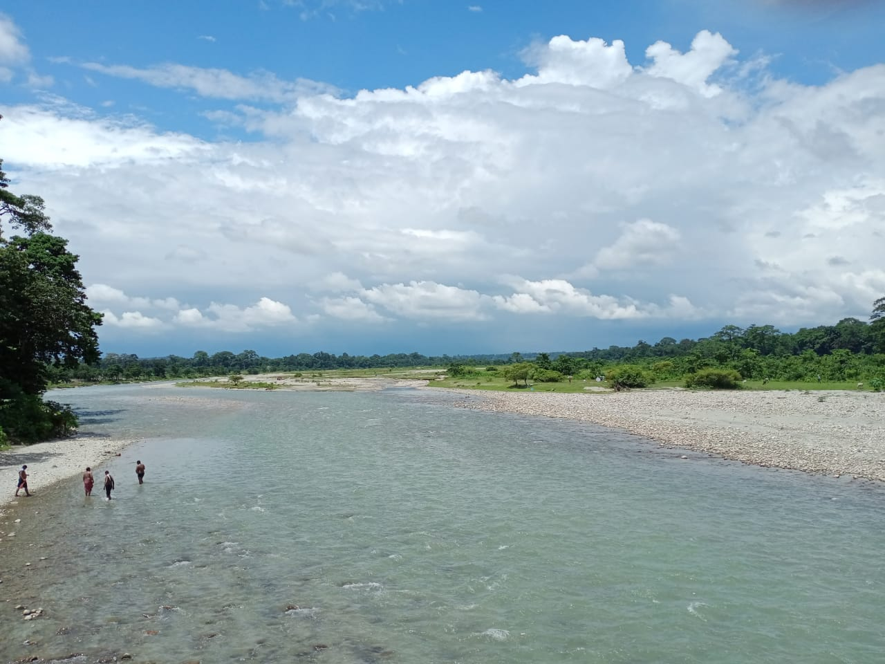
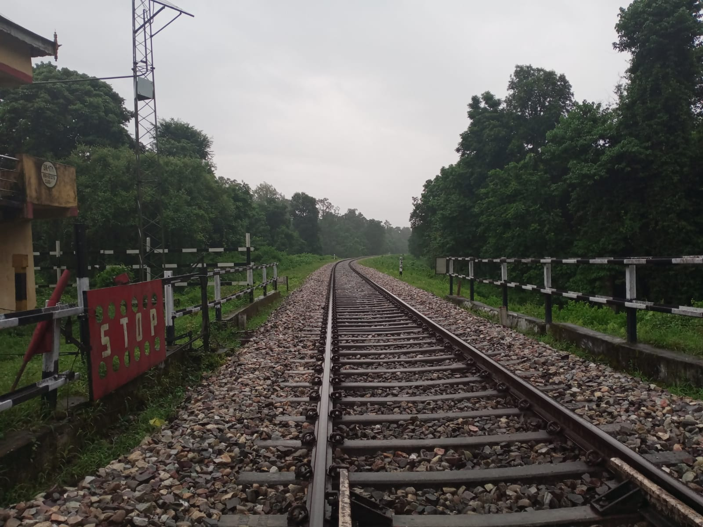

Dooars, literally the gateway to the eastern Himalayas. The fertile and beautiful piece of land on the surface of Earth. From beautiful rivers,
roads and railway tracks to dense forests, tea gardens, mountains and clear bright skies in the background. With average temperature and mild
rain, one of the best places to enjoy the beautiful Earth.

Maynaguri Station

Maynaguri Station
Murti River

Railway track near maynaguri
One of my favourite river is Murti. Freezing clear and shining water running over beautiful small stones. In the background, Himalayas stand still with clouds as its necklace
and on the opposite side, view of the extreme flat dooars. Take a bath. Nope that's so cold!
Apart from the mountains, the dooars are another heavenly place on the surface of Earth. Dense forests with huge and talls trees, sounds of birds and other creatures. Not like
what you here is a Zoo at the middle of a city. No wonder, I understood why Tarzan lived and loved the forest. Even we did a bike ride on the forest roads at night. It was scary
but exciting. The sky was lightening and was coloured purple and throwing some little rain. With loud sounds of insects, its feels like someone is following you. However we did not
cross the line of protection (the canal) and not suggested to do at night, not even at daytime without proper guide and permission from authorities.

Another majestic scenery was the view of railway tracks cutting through the forests. The green vegetations on the dooars and the views of the mountains from there. Well an overall package of natural beauty.
Railway track through Chapamari Forest